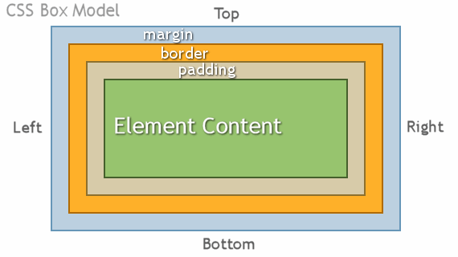

Hello! Let's talk about the box model!
In a document, each element is represented as a rectangular box. Determining the size, properties — like its color, background, borders aspect — and the position of these boxes is the goal of the rendering engine.
In CSS, each of these rectangular boxes is described using the standard box model. This model describes the content of the space taken by an element. Each box has four edges: the margin edge, border edge, padding edge, and content edge.